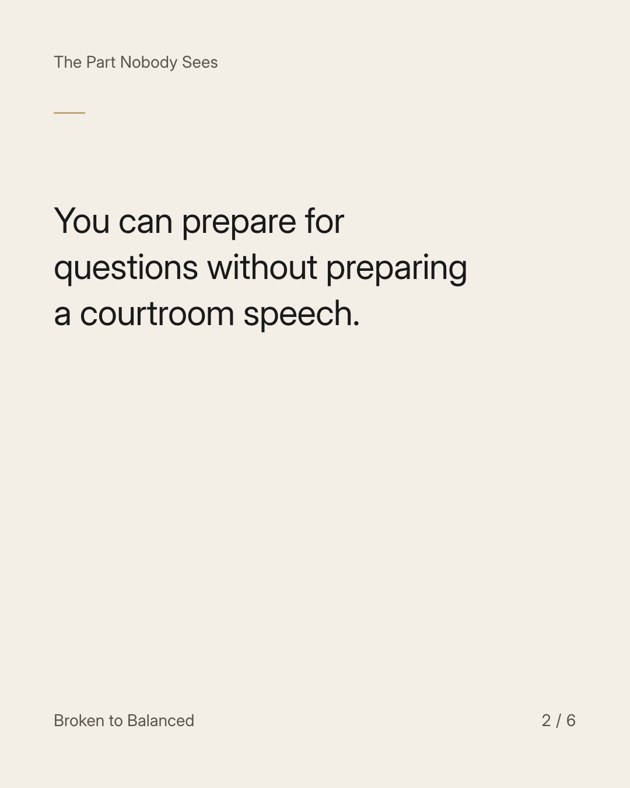
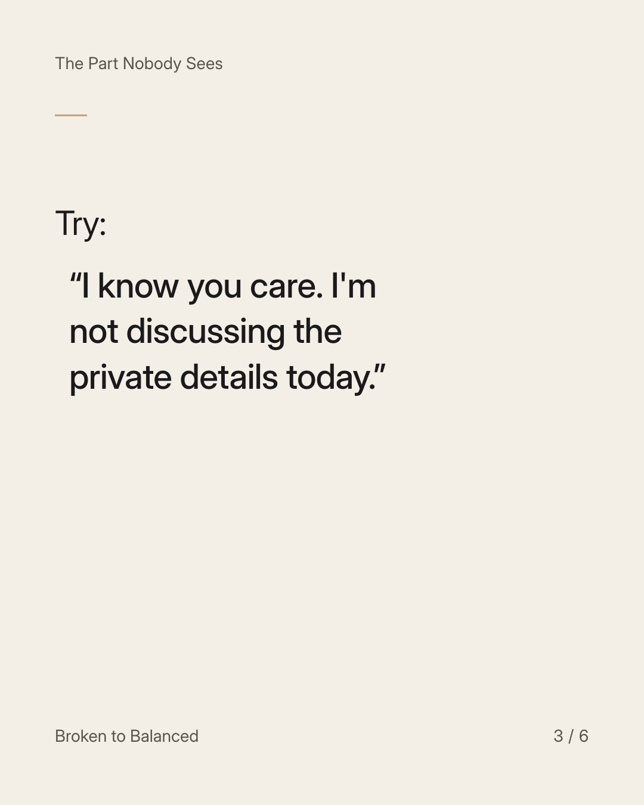
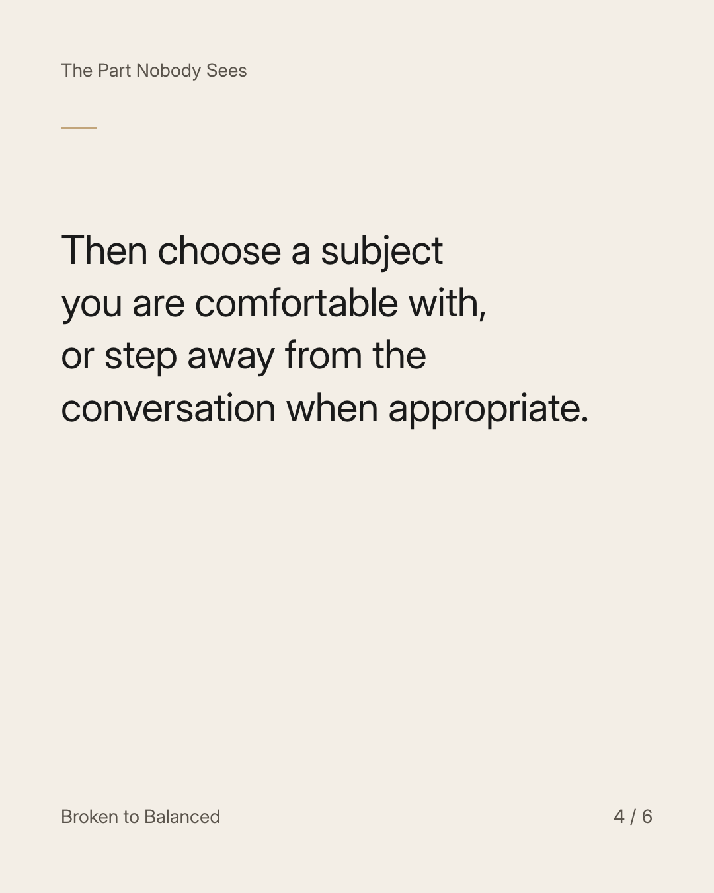
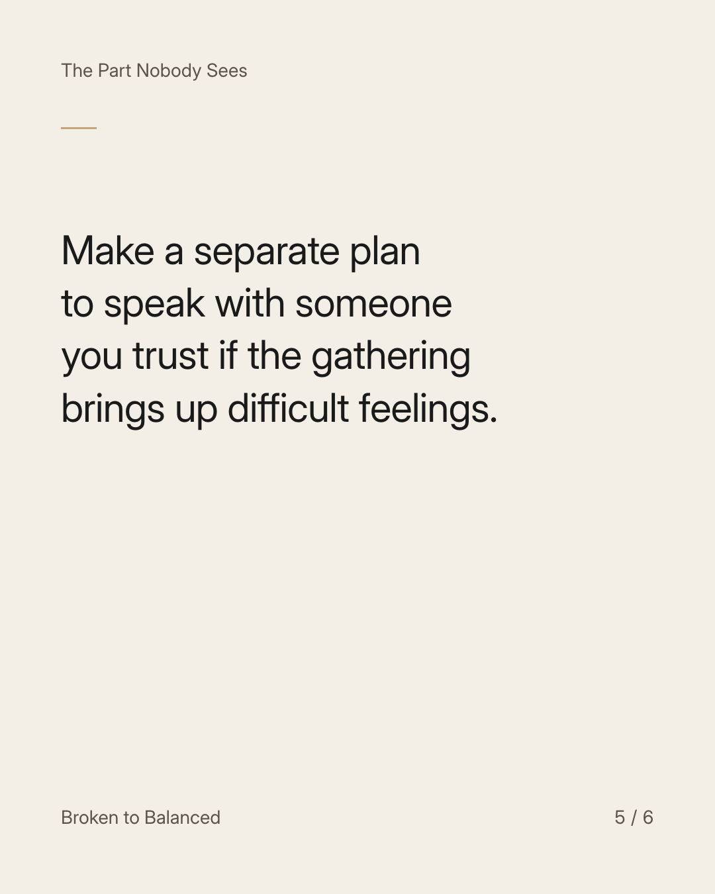
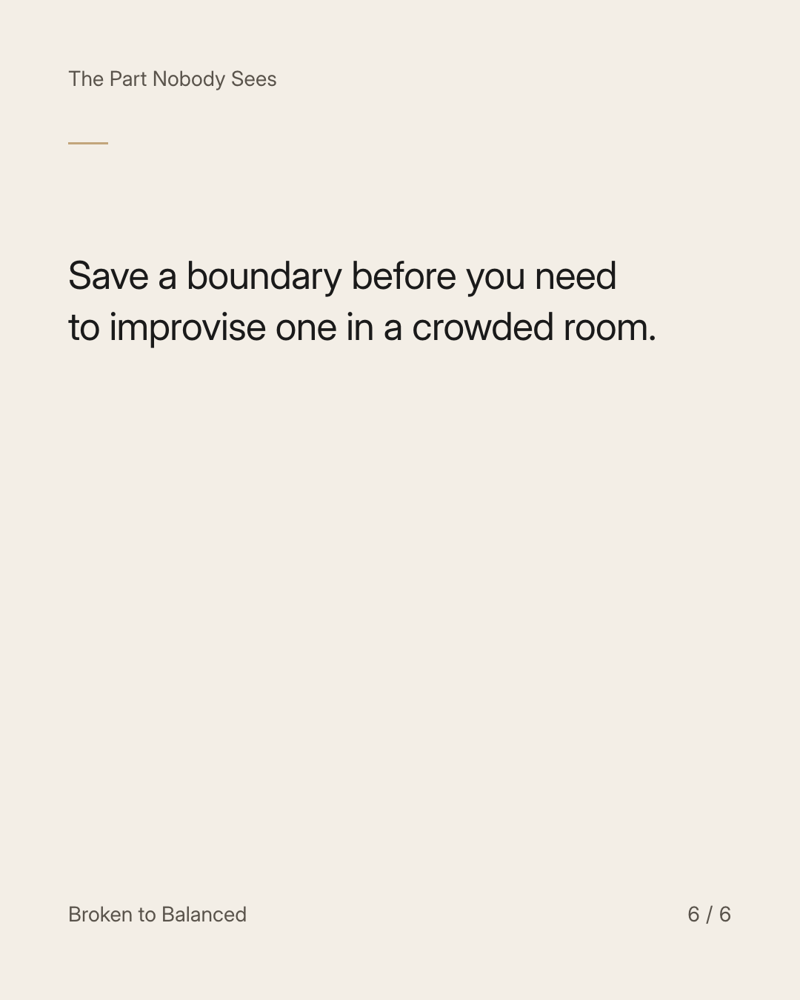

Exact text and accessibility text
A family gathering is not an obligation to defend your history.
Slide 1 of 6. A family gathering is not an obligation to defend your history.


Exact text and accessibility text
You can prepare for questions without preparing a courtroom speech.
Slide 2 of 6. You can prepare for questions without preparing a courtroom speech.


Exact text and accessibility text
Try: “I know you care. I'm not discussing the private details today.”
Slide 3 of 6. Try: “I know you care. I'm not discussing the private details today.”


Exact text and accessibility text
Then choose a subject you are comfortable with, or step away from the conversation when appropriate.
Slide 4 of 6. Then choose a subject you are comfortable with, or step away from the conversation when appropriate.


Exact text and accessibility text
Make a separate plan to speak with someone you trust if the gathering brings up difficult feelings.
Slide 5 of 6. Make a separate plan to speak with someone you trust if the gathering brings up difficult feelings.


Exact text and accessibility text
Save a boundary before you need to improvise one in a crowded room.
Slide 6 of 6. Save a boundary before you need to improvise one in a crowded room.
Exact caption
Plain-text fallback: select and copy the caption.